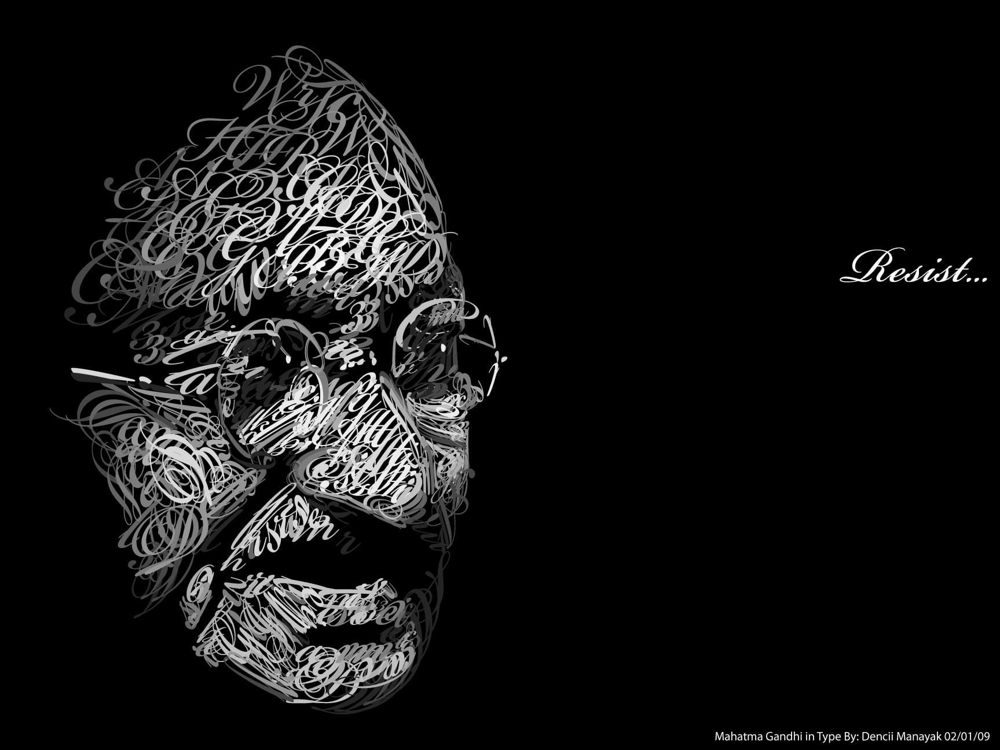

gandhi timeline of important events
- October 2, 1869: ·Birth of Mohandas Karamchand Gandhi
- 1883: ·Gandhi and Kasturbai are married.
- 1885: ·Death of Karamchand Gandhi, Gandhi's father
- September 4, 1888: ·Gandhi leaves for England to study law.
- June 10, 1891: ·Gandhi passes the bar exam in England.
- 1891-1893: ·Gandhi fails as a lawyer in India.
- April 1893: ·Gandhi accepts commission to spend a year in South Africa advising on a lawsuit.
- Spring 1894: ·Gandhi elects to stay on South Africa, and founds the Natal Indian Congress.
- Spring 1896: ·Gandhi returns to India to collect his wife and children.
- December 1896: ·Gandhi returns to South Africa with his family.
- October 1899: ·Outbreak of Boer War (1899-1901) in South Africa. Gandhi organizes an ambulance corps for the British.
- 1901: ·Gandhi returns to India to attend the Indian National Congress. G.K. Gokhale introduces him to nationalist leaders.
- 1901-1906: ·Gandhi struggles toward Brahmacharya, or celibacy, finally ending his sexual activity in 1906.
- 1904: ·Nationalists found the magazine the Indian Opinion, and soon print it on Gandhi's farm, the "Phoenix Settlement."
- 1909: ·Gandhi travels to London, pushing for rights of South African Indians. The Transvaal registration law is repealed.